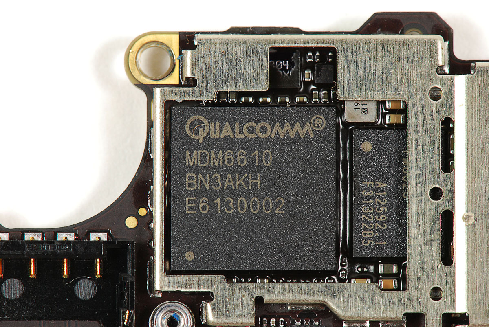

Qualcomm iPhone Baseband Research
November, 2018
Introduction
The iPhone comes with a built-in baseband chip for cellular network features.
Since this chip is powered by a bootloader and operating system completely seperated from iOS and the baseband being poorly documented it is a great subject for research.
There are two ways to research the baseband: One is by looking at firmware and the other way is to fuzz the baseband through OpeniBoot on a legacy (=old, iPhone3G etc.) device.
This research is meant to cover both ways.
Goal
The goal of this research is to learn more about the way the baseband is operating and communicating within the iPhone, to analyze the security of the baseband chip and to discover and document it's capabilities.
Subjects that will be examined are defined as following:
- How is firmware maintenance done on the baseband?
- How is the baseband firmware structured?
- How can one communicate with the baseband and what is possible through this communication?
- Does the baseband implement privilege seperation and if so, is it solid and secure?
- What are the hardware capabilities of the baseband and is the baseband debuggable?
- What can be done remotely in terms of communication and exploitation of the baseband?
Research
The starting point of the research is a firmware image of the baseband taken from the iPhone 4S for examining the firmware and an iPhone 3G with OpeniBoot for examining the communication.
The vendor of the legacy baseband chips is Qualcomm and there is little documentation already available on TheiPhoneWiki about the baseband of legacy devices.
Changelog
- Extracted and examined the firmware with binwalk.
- Examined the baseband operating system image globally (strings)
- Wrote first entry and documentation on TheiPhoneWiki about the firmware.